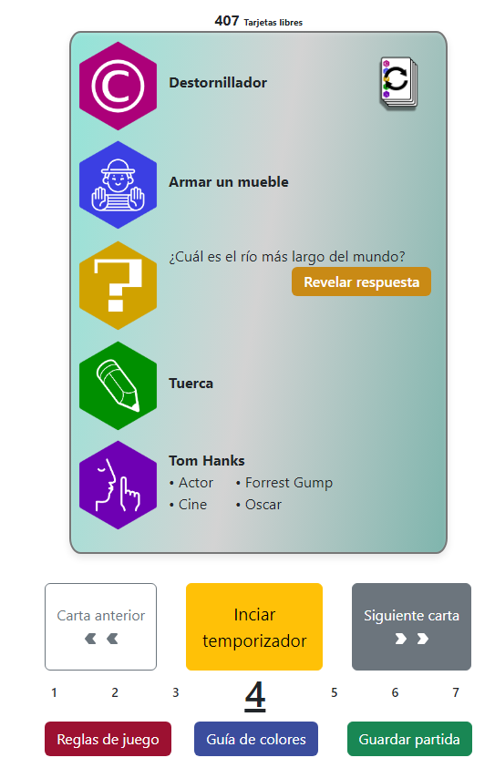

FlickSense
@if (!languageService.eng) {Proyecto integrado final de ciclo
FlickSense es una red social para los amantes del cine, con un catálogo
(ficticio) de más de 1000
películas, donde poder calificarlas, hacerles críticas, seguir a usuarios con tus mismos gustos,
obtener recomendaciones según a los usuarios que sigas, ver las críticas de los demás usuarios,
ver la nota media de las películas, cuantos votos tienen, buscar películas, etc. Solo tienes que
registrarte. Y si consigues entrar en el Staff podrás administrar el
catálogo de películas y los
usuarios.
Aplicacion totalmente funcional con seguridad y roles. Desplegada al 100%
Tecnologias usadas:Angular, Spring Boot y MySql }@else {
Final Integrated Project
FlickSense is a social network for movie lovers, featuring a (fictional) catalog of over 1000 movies. Users can rate movies, write reviews, follow users with similar tastes, receive recommendations based on who they follow, read other users' reviews, see the average ratings and number of votes for each movie, search for movies, and more. Just register to get started. If you become part of the staff, you'll be able to manage the movie catalog and users.
Fully functional application with security and roles, fully deployed
Technologies used:
Angular, Spring Boot, and MySQL
My App
@if (!languageService.eng) {Proyecto libre
My app es una aplicación web con utilidades para jugar a juegos de mesa, por ahora solo para el Party & CO. Se trata de una herramienta que sustituye las tarjetas físicas  por unas digitales, también con temporizador y barajar las tarjetas. Un botón para revisar las reglas de juego, otro para guardar partida. Un catálogo para ver todas las tarjetas, un buscador. Con el rol de administrador el CRUD completo para administrar las tarjetas. @if(video){ }
Aplicacion totalmente funcional con seguridad y roles. Desplegada al 100%
Tecnologias usadas:Angular, Spring Boot y MySql }@else {
Fre project
My app is a web application with tools for playing board games, currently only for Party & CO. It is a tool that replaces physical cards with digital ones, also with a timer and shuffle cards. A button to review the game rules, another to save the game. A catalog to view all the cards, and a search function. With the administrator role, the complete CRUD to manage the cards. @if(video){ }
Fully functional application with security and roles, fully deployed
Technologies used:
Angular, Spring Boot, and MySQL